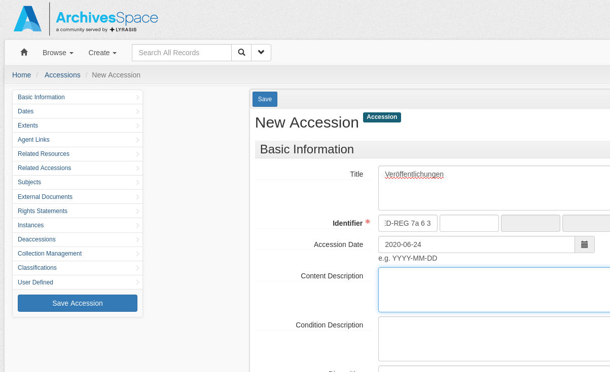

Ab in die Archive
Was tut man denn so an einem Samstagmorgen um 08:30 Uhr? Genau, man setzt sich frisch und fröhlich an seinen Laptop, um die BAIN-Vorlesung zu starten. Aufgrund terminlicher Schwierigkeiten musste die Vorlesung für einige Studierende auf den Samstag verschoben werden und Herr Lohmeier war so freundlich, dasselbe Programm zweimal (und das an einem Wochenende) durchzuführen. Vielen Dank an dieser Stelle!
Wo wir das letzte Mal noch Bibliothekssoftwares angeschaut haben, sind wir diesmal weiter und haben uns der Archivsoftware ArchivesSpace gewidmet. Am Nachmittag haben wir einen Blick auf verschiedene Repository-Softwares, v.a. DSpace, geworfen.
Die Metadatenstandards ISAD(G) und EAD
Was bei Bibliotheken MARC21 ist, ist in Archiven ISAD(G) und EAD, d.h. dies sind die beiden Metadatenstandards, die in Archiven genutzt werden, um Medien in ihren Katalogen festzuhalten.
Bevor die Metadaten digital erfasst wurden, wurden sie in sogenannten Findmitteln festgehalten, genauer in Findbüchern und Zettelkästen. Mit ihrer Hilfe konnte man sich im Archiv orientieren und den Bestand auch wiederfinden. ISAD(G) (International Standard Archival Description (General)) sollte nun in seiner Datenstruktur ähnlich aufgebaut sein, wie diese analogen Findmittel. Der Standard wurde 1994 eingeführt und ist bis heute der wichtigste Metadatenstandard für Archive. Diese organisieren sich nach dem Provenienzprinzip (d.h. die Medien werden im Kontext «woher sie kommen» eingeordnet), die auch in IDAD(G) übernommen wurde.
ISAD(G) verfügt über 26 Verzeichnungselemente und 7 Informationsbereiche sowie 6 Pflichtfelder (Signatur, Titel, Provenienz, Entstehungszeitraum, Umfang, Verzeichnungsstufe). Doch auch ISAD(G) ist nicht perfekt und stösst hie und da an Grenzen. So können bspw. einzelne Datensätze nicht ohne ihren Kontext verstanden werden, wenn z.B. Informationen im Titel fehlen. Dazu kommt, dass die Tektonik eindimensional ist. Dies bedeutet, dass die Baumstruktur, die von ISAD(G) gegeben ist, keine mehrfach-Zuteilung zulässt. Ein Datensatz kann demnach nur an einer Stelle einsortiert und auch nur dort gefunden werden. Mehrdimensionalität wird beispielsweise bei Linked Data gegeben. Auch ist der Standard nicht mehr der Jüngste, bei der Entwicklung in den 90er Jahren wurden keine Vorgaben zur Digitalisierung oder Langzeitarchivierung mit eingerechnet. Genau deshalb steht bereits ein neuer Standard in Entwicklung: RiC (Records in Context), der auch mehrdimensionale Beziehungen zwischen den Datensätzen zulässt.
Die Archivsoftware ArchivesSpace
Um auch einen Einblick in die Archivinformationssysteme zu gewinnen, haben wir auf unserer VM die Open Source-Software ArchivesSpace installiert. Wie auch Koha, ist ArchivesSpace ein Open Source-Projekt, das durch die Mitarbeit von diversen Unternehmen professionalisiert wurde. Auf dem GitHub von ArchivesSpace kann der Jahresverlauf und die Aktivitäten der Software angesehen werden, wobei man beurteilen kann, wie konstant an ihr gearbeitet wird. Der wichtigste Faktor ist, dass die Software die alltägliche Arbeit im Archivwesen unterstützen kann.
ArchivesSpace unterstützt die Metadatenstandards ISAD(G), ISAAR(CPF) (eine Erweiterung von ISAD(G)) und DACS, ein Standard, der vor allem in den USA verbreitet ist.
Weg von der Theorie hin zur Praxis
Wir haben begonnen ArchivesSpace 2.7.1 auf der virtuellen Maschine zu installieren. Auch hier wurde es uns ziemlich einfach gemacht, dass wir lediglich die entsprechenden Kommandos in die Shell kopieren und abwarten mussten. Und ich habe gewartet. Und gewartet. Die Shell arbeitet und arbeitet und nimmt kein Ende. Obwohl Herr Lohmeier fünf Minuten vor der Installation noch gesagt hat, dass der Prozess im Terminal weiterlaufen wird und wir ein paar Minuten nach der Installation die Anwendung im Browser öffnen können, habe ich dies natürlich bereits wieder vergessen. Nach einer gefühlten Ewigkeit hat jemand noch einmal auf diese Tatsache hingewiesen und ich habe gemerkt, dass ich ArchivesSpace einfach im Browser öffnen kann. Und das hat sogar funktioniert.
Auf der Software haben wir dann ein eigenes Repository erstellt, wo wir auch eigene Datensätze hochladen konnten. Glücklicherweise waren in diesem riesigen Formular alle Pflichtfelder markiert, dies machte die Orientierung etwas einfacher (siehe Bild unten). Ganz allgemein bin ich etwas zügig und unkonzentriert über diese Aufgabe, dass ich teilweise eher unpassende und komische Felder ausgewählt habe, dass der Datensatz am Schluss nicht ganz so viel Sinn gemacht hat. Dies hätte ich verhindern können, wenn ich mich ein bisschen mehr mit der Software und den ganzen Feldern auseinandergesetzt hätte.

Repository-Software für Publikationen und Forschungsdaten
Dezenter Themenwechsel: Wir betrachten die Unterschiede zwischen Open Access und Open Data in Bezug zu Publikationen und Forschungsdaten. Publikationen werden als Open Access abgelegt. Der Fokus liegt hier auf den Zweitveröffentlichungen (d.h. nachdem die Publikation bereits in Magazinen gedruckt wurde) und Hochschulschriften.
OpenDOAR ist eine Webseite, die Statistiken liefert, bspw. zu den grössten Repositories der Welt oder welches die meist-verwendeten Software-Plattformen sind (v.a. DSpace). Dem gegenüber stehen die Forschungsdaten, die als Open Data veröffentlicht werden. Ihr Fokus liegt auf den Primärdaten, die bspw. bei Umfragen oder Experimenten entstehen können, die dann in Forschungsdaten-Repositories abgelegt werden. Die Statistiken diesbezüglich sind unter
Re3data abzurufen. Auch diese Webseite veröffentlicht Statistiken zu den meistgenutzten Softwares für Forschungsdatenrepositories (natürlich auch hier: DSpace an vorderster Front).